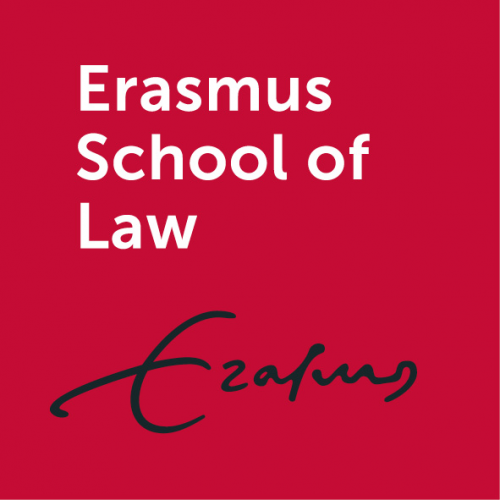
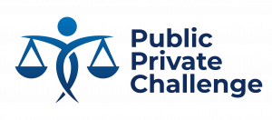

11-12 June 2026
Erasmus University Rotterdam
Erasmus University Rotterdam
| Home | CfP | Program | Directions | Book | LAIR 2023 |
The Law, AI and Regulation (LAIR) Conference is an international forum bringing together scholars, practitioners, and policymakers working at the intersection of law, artificial intelligence, and regulation. The first LAIR Conference was hosted in Rotterdam on 8 - 9 June 2023 and featured keynotes, panel discussions, and lively debate on the challenges and opportunities of governing AI in an evolving regulatory landscape. Building on the success of this inaugural event, the LAIR Conference will return for its second edition in 2026, continuing to foster interdisciplinary dialogue on responsible, human-centred AI governance.
This conference has been funded by the Small Grants Scheme of the research initiative on Rebalancing Public & Private Interests and Erasmus Center of Empirical Legal Studies of Erasmus School of Law and the sector plan for law funding of the Ministry of Education, Culture and Research.
|  |  |